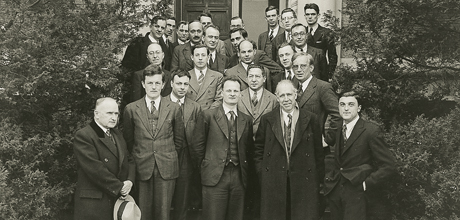
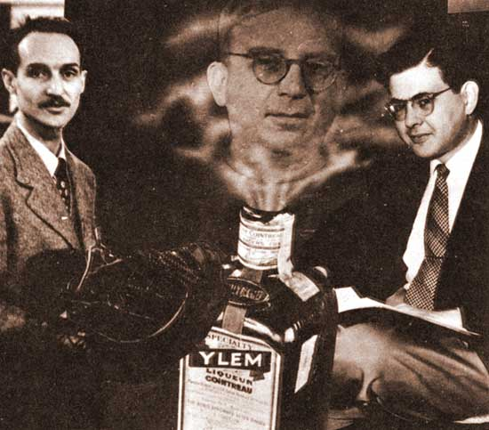
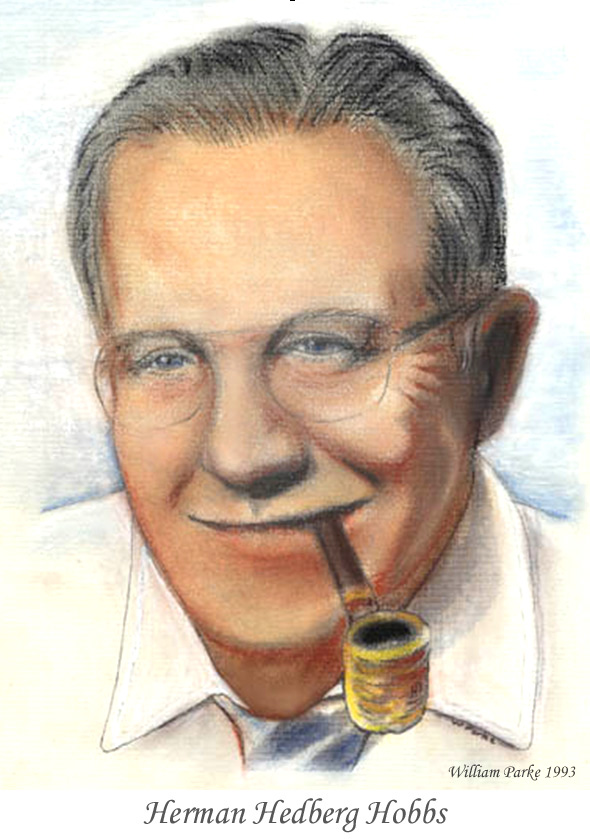
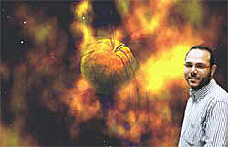

|
History of Astrophysics at GW |
|
Following a desire and bequest of U.S. President George Washington for the establishment of a national institution of higher learning in the District of Columbia to "spread systematic ideas throughout this Empire", the Columbian College was created on February 9, 1821, by an Act of Congress, signed by President James Monroe. The College was to be private and nonsectarian.
In 1873, Columbian College changed its name to Columbian University. It began offering doctoral degrees and admitted its first women. Columbian University became The George Washington University in 1904 under an agreement with the George Washington Memorial Association. In 1912, the University moved from its building around 15th and L Streets, NW, to its present location in Foggy Bottom, five blocks west of the White House. The Department of Physics grew out of the Department of Arts and Sciences shortly thereafter. The University was a center for theoretical physics in the 1930s because of the presence of George Gamow and the conferences he organized, following the model he saw working with Niels Bohr in Copenhagen. One of the most important moments in the 20th century occurred at a conference on the GW campus: On Jan. 26, 1939, Niels Bohr announced that Otto Hahn had successfully split the atom, ushering in the atomic age. Gamow is now known for developing the Big Bang Theory of the Universe while at GW. |
 Columbian College building, c.1850 |
During the summer of 1934, GW President Cloyd Heck Marvin, knowing of the rapid advancement of the new quantum theory and nuclear physics, wanted to advance the sciences at GW, but had a quite limited budget. Asking the advice of Merle Tuve (director of the accelerator laboratory at the Carnegie Institution of Washington), he was persuaded that a good theoretician would be better than a good experimentalist, as the theoretician did not require a laboratory. Dr. Tuve recommended George Gamow, who had become available after escaping with his wife Rho from the Soviet Union. He would conduct research at Carnegie and join the University's Physics Department. When the already renowned physicist George Gamow was recruited, he agreed to come under several conditions: He wanted to bring friend and colleague Edward Teller and he wanted the resources to organize yearly conferences on current topics in physics. President Marvin agreed. The Conferences would be jointly sponsored by GW and the Carnegie.
|

Participants at the Washington Theoretical Physics Conference in 1937. Front row center is Hans Bethe; to the right are I.I. Rabi, Niels Bohr and Felix Bloch; behind Dr. Bohr to the right is George Gamow. Edward Teller is in the 2nd row from the back, near the center, with face partially hidden. Eugene Wigner is on left in 2nd row. |
So from 1935 to 1947 (excluding the World War II years 1943-1945), Drs. Gamow and Teller at GW, and Tuve at Carnegie, were able to attract a few dozen of the most prominent physicists in the world to GW's campus at a time when new physics was flourishing. During the Washington Conferences on Theoretical Physics, fruitful ideas surfaced in presentations and informal discussions focused on topics like nuclear reactions, stellar processes, low temperature physics and gravitation. These ideas aided in understanding nature and led to many far-reaching applications now part of modern technology.
Humanity has been affected by the technology that grew from the physics of the 1930s and 1940s. Being informal, limited in size and attracting the greatest physicists of the time, the Washington Conferences on Theoretical Physics at GW significantly influenced the present understanding of fundamental physical processes as well as the resulting practical applications that can make life easier - all while laying a wider foundation for future developments.
Washington Conferences on Theoretical Physics
|
Three plaques commemorating Dr. Gamow, Dr. Teller and the Atomic Age can be found in the front of Corcoran Hall.
More about Gamow
Gamow loved to think about new ideas. He wrote about them in technical and in popular literature. One of the fields that interested him was cosmology: How did the universe and its elements come about? He made stellar evolution and cosmology the focus of the 1942 conference. After the war, in October of 1945, he wrote to his friend Niels Bohr, that he was engaged in "studying the problem of the origin of elements at the early states of the expanding universe. It means bringing together the relativistic formulae for expansion and the rates of thermonuclear anf fission reactions." The result of this thinking was his 1948 "hot big bang theory," correctly predicting the ratio of helium to hydrogen in the universe. He also predicted that there should be relic radiation left over from the big bang.
| Shown is a 1949 image created by Ralph Alpher (on right in image); Robert Herman is on the left, and George Gamow is the genie coming out of the bottle of "Ylem". Ylem was Gamow's name for the cosmic soup of protons, neutrons, and electrons that he proposed were created at the time of the hot big bang and that subsequently formed the light chemical elements. |  |
For more on Gamow's life, see the article published in GW Magazine in the Spring of 2000 by Prof. Harper.
For more on Gamow's hot big-bang theory, see the article published in the Columbian Magazine in the Spring of 2012 by Prof. Parke.
For some early GW stories about Gamow, see these articles published in the GW Hatchet in the 1930's.
Astronomy expands
| With the strength of Professor Herman H. Hobbs's knowledge and his ability to inspire, his astronomy course grew from a few in the early-1970s to a good fraction of all students fulfilling a science elective in the College. Teaching two or three lecture sections a semester, each section with up to 120 students, Prof. Hobbs engaged each student's natural sense of wonder to such an extent that he motivated a number of these initially non-science majors to become physicists. Some of these later became prominent in their field. Prof. Hobbs' research into the growth of metallic whiskers was supported by NASA. |  |
Discovery of Magnetars
| In 2002, Alaa Ibrahim, a physics graduate student working under Prof. Parke at GW and Jean Swank at NASA-Goddard Space Flight Center, announced the discovery of the first confirmed magnetar. Magnetars are neutron stars with exceptionally strong magnetic fields (in the range of 10^15 gauss), as predicted by Robert C. Duncan and Christopher Thompson in 1992. |  |
NASA/GW Researchers Discover a New Member in an Exotic Class of Neutron Stars
| In 2004, Dr. Alaa Ibrahim, working with a team at NASA/Goddard and with Prof. Parke at GW, announced the discovery of a new class of neutron stars. |
GW Astrophysics Group
In 2005, Prof. Kalvir Dhuga organized the GW Astrophysics Group,with founding members Profs. Dhuga, Ali Eskandarian, Leonard Maximon, and William Parke. These initial members all had long experience in either theoretical or experimental nuclear physics, and decided to actively pursue research into high-energy astrophysics, applying their knowledge of the behavior of nuclear and elementary particles to the outstanding questions involving the behavior of compact astrophysical bodies, including X-ray binaries, cataclysmic variables, gamma-ray bursters, neutron stars, and black holes. All of these objects emit high-energy radiation detectable here on Earth. The Astrophysics Group have included a number of undergraduate and graduate astrophysics students and postdocs, and have been joined by faculty members Oleg Kargaltsev and Alexandra Corsi, both very active observational high-energy astrophysicists.GW Astrophysics Group Co-sponsors the Fifth International X-Ray Astronomy School
In the summer of 2007, the GW Astrophysics Group and the High Energy Astrophysics Science group at NASA/Goddard Space Flight Center jointly offered the Fifth International X-Ray Astronomy School. Students are given the opportunity to learn from scientists who are actively participating in X-ray research and analysis through lectures, discussions, and student projects.These web pages are maintained by the GW Astrophysics Group. Report questions, problems and broken links to Prof. Oleg Kargaltsev.